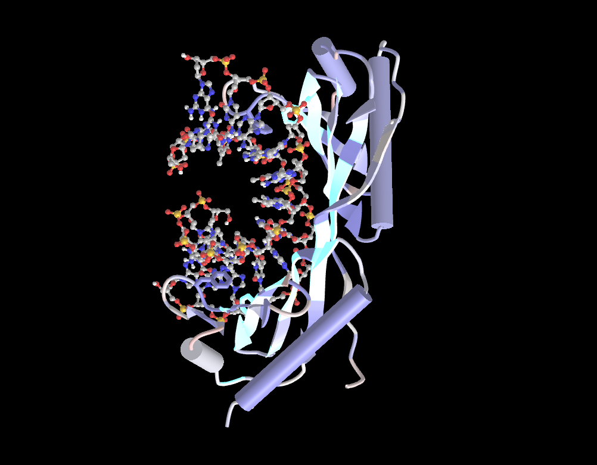

So, what exactly am I interested in? Great question! I actually am not really sure yet. I'm hoping I'll be able to figure out more of what type of work I'm specifically looking to do when I do a co-op, but for now my interests lie in machine learning and its applications in healthcare. That's why I joined ViTAL, the healthcare innovation club on campus, and their hackathon organizing team as Event and Relations Lead so that I can not only better understand my interests and passions but also guide others in this industry and help them produce efficient and exciting solutions. I'm also really interested in computational modelling, and one cool thing I've been doing in my biochemistry lab is modelling molecules like DNA and the TATA binding box. Below is one image from the iCn3D software that I used in my biochem lab. This molecule is the TATA binding protein/DNA complex, which has the experimental PDB structure code of 1TGH. The proteins are rendered in cylinder and plate form, because it makes it visually interesting to look at and see what the different sections of the protein looks like. The color chosen was cyan, to also help contrast against the nucleotides. The nucleotides are rendered in ball and stick, to help differentiate them from the protein and also see better detail, and colored in CPK format.
